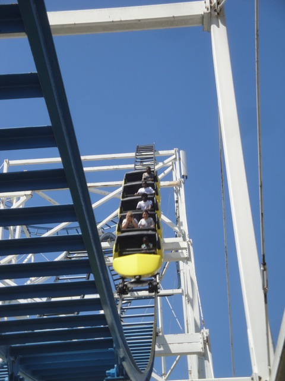
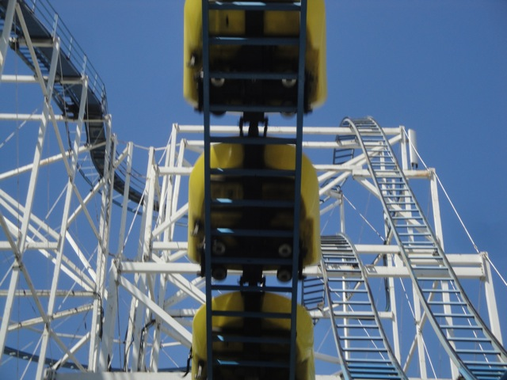
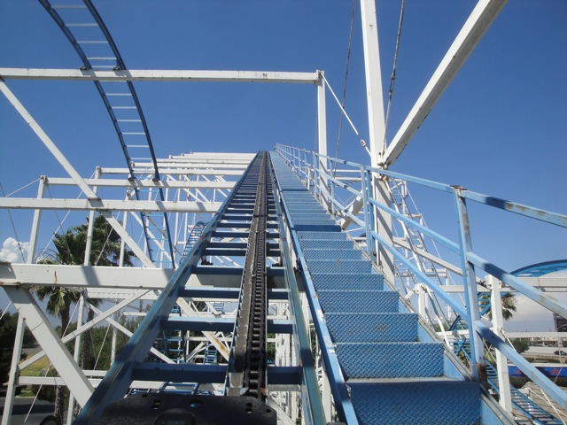
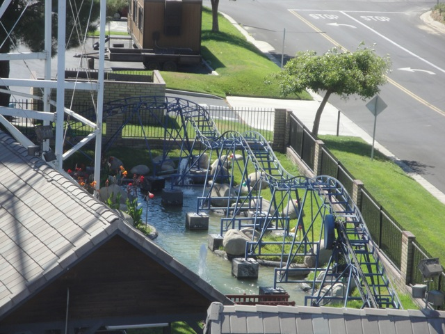
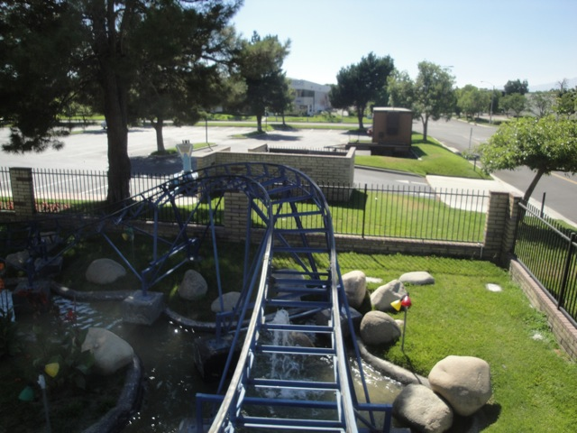
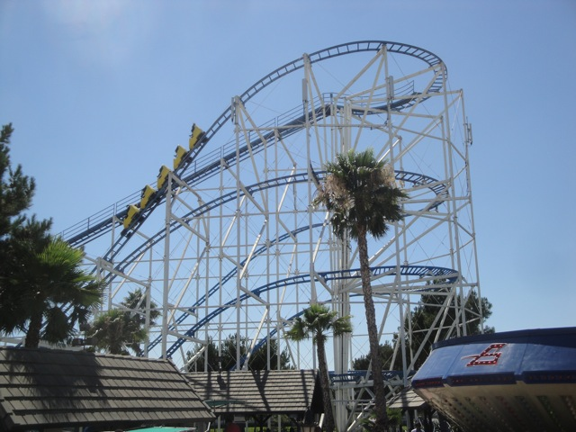
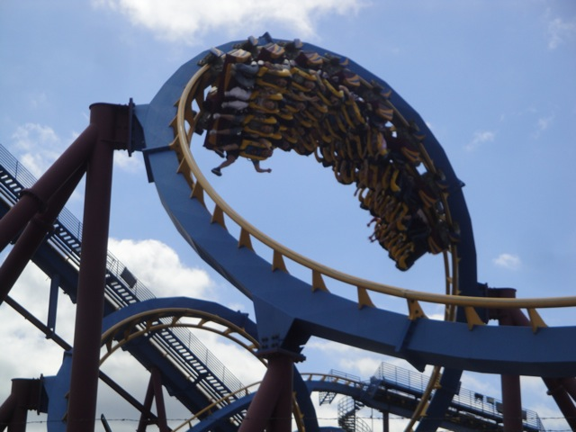
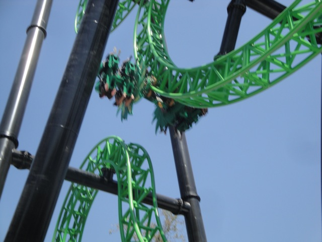

Credit Whoring Day
Castle Park Scandia
 All right. Continuing on with Credit Whoring Day, we hit up two more credits at Scandia.
All right. Continuing on with Credit Whoring Day, we hit up two more credits at Scandia.
 All right. Time for more credit whoring!!!
All right. Time for more credit whoring!!!
 First up, the Scandia Screamer.
First up, the Scandia Screamer.
Sorry Ceaser. But it's recommended that you stay out of the back.

Hmm. For a credit whoring coaster, this looks like a lot of fun.

Scandia Screamer soaring up above.
 Don't underestimate that tiny little hill. It has ALOT of power.
Don't underestimate that tiny little hill. It has ALOT of power.
 Yeah. You better hang on right there.
Yeah. You better hang on right there.

Ok. Enough Chit Chat. Let's ride.
 Oh Crap. This looks a lot bigger from up here.
Oh Crap. This looks a lot bigger from up here.
 Dude, the Scandia Screamer KICKS ASS!!!!! It's fast, has lots of crazy pops of ejector air, and laterals that are more than twice as strong as a Scramblers. And the more the ride goes on, the more insane it gets. If any ride deserves the title of underrated, the Scandia Screamer would get it.
Dude, the Scandia Screamer KICKS ASS!!!!! It's fast, has lots of crazy pops of ejector air, and laterals that are more than twice as strong as a Scramblers. And the more the ride goes on, the more insane it gets. If any ride deserves the title of underrated, the Scandia Screamer would get it.
Anyways, that's enough Scandia Screamer. Let's check out their drop tower.
Anyone else find it ironic that we're cliff jumpers riding the Cliff Jumper.
"If I try Cliff Jumping, I'll jump, land in the water and go belly up."
Wee!!!!! Shock Drops are fun!!!!!!!
 Scandia Screamer from the Cliff Jumper.
Scandia Screamer from the Cliff Jumper.
 Meh, this is fun and all, but jumping the 50 fter at Tar Creek Canyon is much better.
Meh, this is fun and all, but jumping the 50 fter at Tar Creek Canyon is much better.
LAME!!!!!! They tore out their Kamakazie Clone. =(
 All right!!! Time to get the final credit we need here.
All right!!! Time to get the final credit we need here.

Credit #230.
 Cha-Freaking-Ching!!!!
Cha-Freaking-Ching!!!!

While this may look like the same kiddy coaster from Castle Park earlier today, the one over there was much better.

All right. Lets get back to the Scandia Screamer.
F*ck whatever that sign says!!! I'm getting on the back of Scandia Screamer!!!!
 So far, so good.
So far, so good.
 OH SH*T!!!!!!!!!!
OH SH*T!!!!!!!!!!
 These go karts remind of Mt. Olympus with everyone rear ending everyone. (Except it's not nearly as hard here.)
These go karts remind of Mt. Olympus with everyone rear ending everyone. (Except it's not nearly as hard here.)
Dude!!!! Bumper Boats with water guns attached!!!! We are so riding that!!!!!
 This poor woman was the target that all the kids got on the Bumper Boats. And yes, it's funny as hell.
This poor woman was the target that all the kids got on the Bumper Boats. And yes, it's funny as hell.
Not only did I get soaked on the bumper boats, but I don't even care!!!
All right!!! We then went over to the Gas Station to have dinner as well as fill up my car.
Yep. We took a suprise visit to Six Flags Magic Mountain to get a ride on X2. (Unfortunetly, we never got on X2 due to the insane crowds.)
Well today was quite a busy day today. We managed to go to three theme parks all in the same day.

Dude, we managed to ride all the Screams today. We rode Screamin Demon at Castle Park, Scandia Screamer at Scandia, and Scream at Six Flags Magic Mountain!!! Ok, we're missing California Screamin and Supreme Scream, but still. We rode 3 Screams today.

And while the ridicolous crowds prevented us from getting on X2, we still managed to get on Green Lantern thanks to the secret single riders line. And that concludes the madness of Credit Whoring Day.
Home